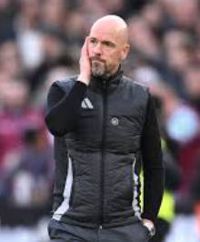
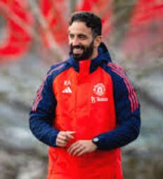
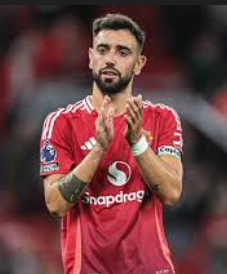
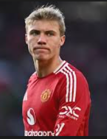
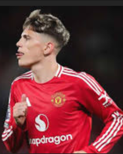
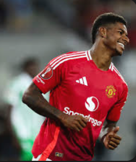
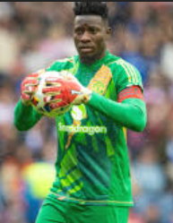
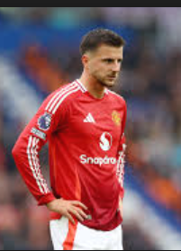

MANCHESTER UNITED TEAM ANALYSIS








As of matchday 12 in the Premier League (November 2024)
Current Form :
League Position: United sits mid-table after 12 games, reflecting a challenging start to the season under Erik ten Hag and now Ruben Amorim.
Recent Results: Results have been mixed. United’s inconsistency persists, including disappointing losses and narrow wins against mid-tier teams.
Team Strengths
Key Players:
Bruno Fernandes: Continues to lead creatively, carrying much of the attacking burden.
Rasmus Højlund: Showing promise with movement and physicality upfront, though service to him has been inconsistent.
Alejandro Garnacho: A game-changer off the bench, offering pace and directness.
Counterattacks: The team excels when exploiting space on the break, with players like Rashford and Garnacho thriving in these situations.
Weaknesses
Defensive Fragility:
Injuries to key defenders (Varane, Martinez, Shaw) have forced reliance on players like Maguire and Lindelöf.
Onana has shown improvement but still struggles with commanding his area.
Midfield Imbalance:
Casemiro’s form has dipped, and Mount is yet to find consistency, leaving the team vulnerable in transitions.
Tactical Adjustment: Amorim’s 3-4-3 system is still being implemented, and the team lacks fluidity in attack and defense.
What’s Next?
Amorim faces a tough task to stabilize the team and climb the league table. His focus will likely be:
Solidifying the defense with fit personnel.
Integrating his tactical system effectively.
Getting the best out of key attackers like Rashford and Højlund.
credit: chatGPT
{kind=link}
{kind=link}
{kind=link}
{kind=link}
{kind=link}
{kind=link}
{kind=link}
{kind=link}